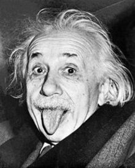

WHAT IS
A PALE BLUE DOT?
It has been said that astronomy
is a humbling and character-building experience. There is
perhaps no better demonstration of the folly of human conceits
than this distant image of our tiny world. To me, it underscores
our responsibility to deal more kindly with one another, and to
preserve and cherish the pale blue dot, the only home we've ever known.
This image of Earth is one of 60 frames taken by the Voyager 1
spacecraft on February 14, 1990 from a distance of more than 6
billion kilometers (4 billion miles) and about 32 degrees above
the ecliptic plane. In the image the Earth is a mere point of
light, a crescent only 0.12 pixel in size. Our planet was caught
in the center of one of the scattered light rays resulting from
taking the image so close to the Sun. This image is part of
Voyager 1's final photographic assignment which captured
family portraits of the Sun and planets.

LISTEN TO

THE UNIVERSE
was formed in the Big Bang almost 14 billion years ago.
|
If I have seen further than others, it is by standing upon the shoulders of giants.
-Isaac Newton

|
|
Intelligence is the ability to adapt to change.
-Stephen Hawking

|
|
Knowing how to think empowers you far beyond those who know only what to think.
-Neil deGrasse Tyson
|
|
We're made of star stuff. We are a way for the cosmos to know itself.
-Carl Sagan

|
|
Imagination is more important than knowledge.
-Albert Einstein

|
|
If I have seen further than others, it is by standing upon the shoulders of giants.
-Isaac Newton
|
|
Intelligence is the ability to adapt to change.
-Stephen Hawking
|
|
Knowing how to think empowers you far beyond those who know only what to think.
-Neil deGrasse Tyson
|
|
We're made of star stuff. We are a way for the cosmos to know itself.
-Carl Sagan
|
|
Imagination is more important than knowledge.
-Albert Einstein
|


Does climate change exist?
Ice sheets are shrinking... Oceans are warming...
Global temperatures are rising...


WILL YOU BE THE ONE TO ANSWER THESE QUESTIONS?
If we ever find extraterrestrial life, what will the society look like?
Show more
Replay